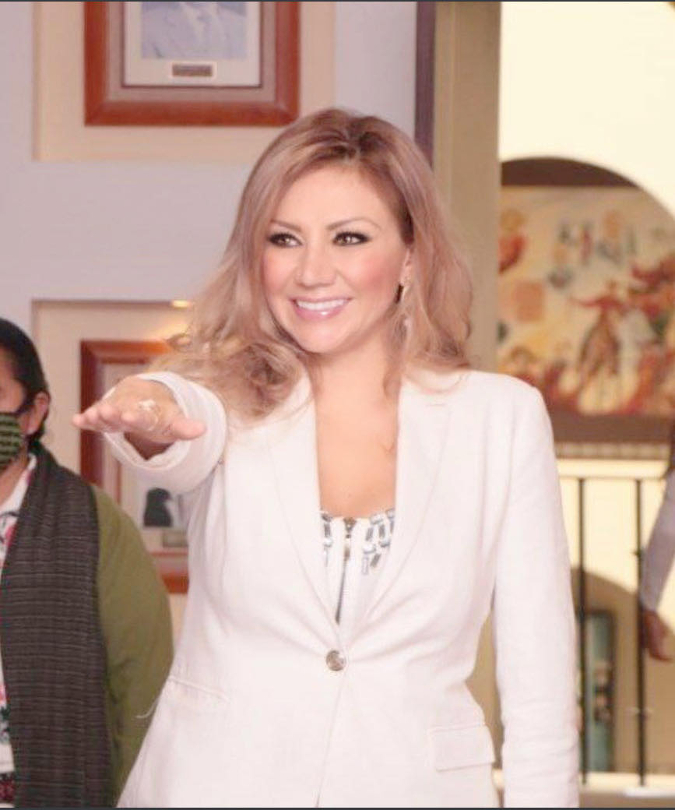

"Si dejas salir tus miedos tendrás más espacio para vivir tus sueños"
- Marilyn Monroe -
---- CONOCE A XÓCHITL ----

Orgullosamente originaria del Municipio de Cuautitlán, Estado de México.
Magistrada en retiro del Tribunal de Justicia Administrativa del Estado de México.
Soy la Primera Mujer Doctora en Derecho Judicial egresada de la Escuela del Poder Judicial del Estado de México,
donde obtuve el grado de Doctora con la tesis titulada “La Violencia Moral como Inequidad de Género en el Estado de México”.
Tengo experiencia en diferentes áreas, tales como:
- Regidora en el Municipio de Cuautitlán, Estado de México, por edad y por género.
- Directora del Instituto Municipal de la Mujer del Municipio de Cuautitlán, Estado de México.
- Coordinadora de la Región XIV del Organismo Nacional de Mujeres Priistas del Estado de México, que abarca los Municipios de Coacalco, Tultitlán, Cuautitlán, Melchor Ocampo, Teoloyucan y Tultepec
- Secretaria de Asuntos Jurídicos del Organismo Nacional de Mujeres Priistas del Estado de México.
Además de los antes mencionado, he tenido la oportunidad de participar en:
- Soy colaboradora en la revista “Igualdad", editada por el Consejo de la Judicatura Federal.
- Tengo una columna en el Diario de mayor circulación en el Estado de México “El Sol de Toluca” titulada: “Mujer Contemporánea
- Escribo artículos para la Revista "Valores
- Tengo un segmento televisivo en el programa de “Grupo Formula”, versando temas jurídicos y sociales.